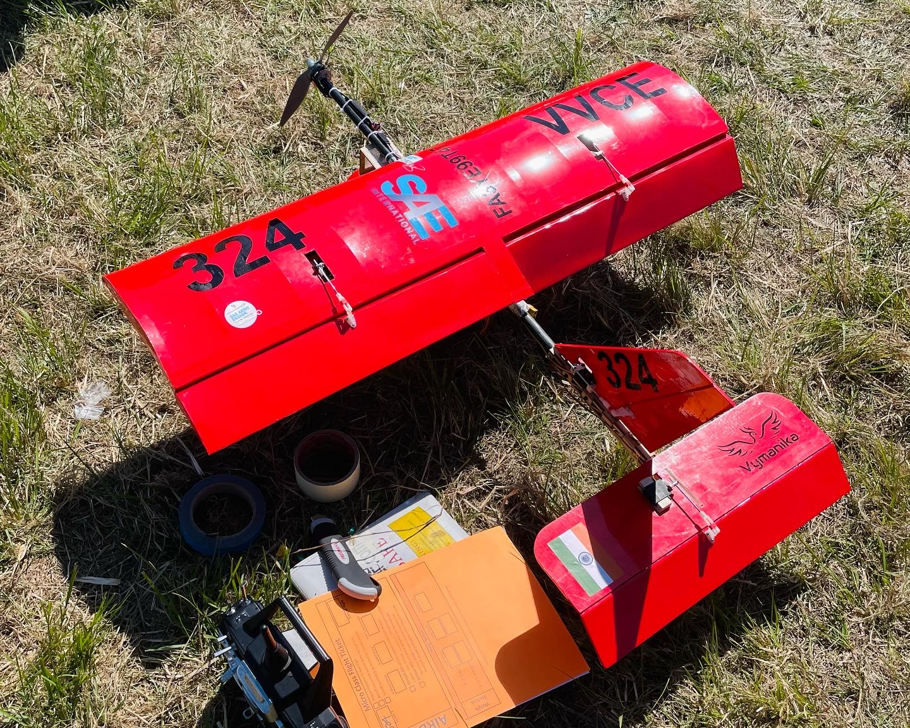

Hi There ! I'm Sri Welcome!!
I'm a Mechanical Engineering Graduate Student at Iowa State University. Specializing in Machine Learning for Cyber-Physical Systems, solid modeling, and complex design optimization.
01 // Experience
Research Assistant
MAY 2025 — PRESENTIowa State University // NSF Funded AI-Based AFM Project
- Designing a deep learning-based sequence-to-sequence LSTM framework for modeling nonlinear actuator dynamics.
- Developing black-box identification pipelines for nonlinear hysteretic systems to improve precision.
- Reduced training time by 50% using GPU-based computation and B-spline decomposition.
Teaching Assistant
AUG 2024 — PRESENTIowa State University // Heat Transfer & System Dynamics
- Supporting 100+ students through labs and recitations for ME 4360 and ME 4210.
- Facilitating lab safety protocols and training students on specialized thermal equipment.
- Achieved strong performance feedback (4.3/5.0) for instructional outcomes.
Research Intern
JUL 2023 — FEB 2024Indian Institute of Science (IISc) // Nanometrology Lab
- Investigated micro-robotic compliant mechanism designs for bridge-amplifier nanopositioners.
- Conducted static and modal characterization using COMSOL Multiphysics and MATLAB.
- Collaborated with fabrication teams to support prototype development.
Mechanical Design Intern
SEP 2022 — NOV 2022Ace Designers Ltd. // Innovation & Growth Department
- Researched machinery design and performed root cause analysis to identify opportunities for system improvements.
- Created and optimized 3D CAD models, focusing on sheet metal parts and assemblies under tight deadlines.
- Led systematic disassembly of machines, assigning unique IDs for accurate identification and process documentation.

System_Online
>> FETCHING_CAREER_DATA
Found 4 records...
Data_Input
Proc_Status
OPTIMIZED_STATE
02 // Projects

SAE Micro Class Aircraft
Led a team of 18 to design and test a micro-class aircraft, achieving 6th place worldwide.
Self-Stabilizing Spoon
Assistive mechatronic system for Parkinson's utilizing PID control for active vibration damping.
RFID Cycle Counter
Real-time IoT cycle counting system with automated data logging for endurance testing.
Taxi Demand Forecast
ML-based web application to forecast taxi demand using Streamlit and Scikit-Learn.
Review Analysis
NLP pipeline in R using sLDA to analyze professor reviews and identify key rating topics.
GPU Heat Transfer
CUDA-based GPU implementation for solving 2D transient heat transfer equations.
Road Segmentation
Semantic segmentation on CityScapes dataset using Fast-SCNN, SegFormer, and YOLOv8.